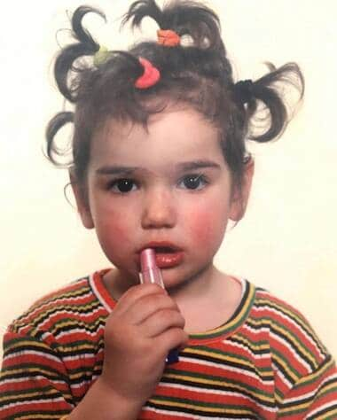

Es una chica de londres de 27 años, que se dedica a la música POP, disco, house y R&B.
GRANDES CAMBIOS PARA PERSEGUIR UN SUEÑO
Dua Lipa vino al mundo el 22 de agosto de 1995 en Londres, ciudad a la que sus padres, Dukagjin Lipa y Anesa Rexha, se trasladaron en 1992 como refugiados en la época de la Guerra de Bosnia.
Debido al origen albanokosovar de sus progenitores y tras el fin de los conflictos, la familia regresó a su tierra debido al trabajo del padre de Dua, cuando esta tenía 11 años.
Dua Lipa es la hija mayor del matrimonio, que tiene otros dos hijos, Rina y Gjin.
Al llegar a Londres, su padre, Dukagjin Lipa, consiguió trabajo en el área de marketing de una productora de festivales de música. Además, fue vocalista y guitarrista de la banda de rock Oda en Kosovo, por lo que la pasión de Dua por la música tiene un claro origen.
